La ponctualité est l'indicateur central de tout exploitant de transport. Un retard n'est jamais isolé : le véhicule est attendu ailleurs, et son retard peut se reporter sur ses services suivants — un phénomène observé lors de mon stage chez ALSA Agadir City (transport urbain par bus). Ce projet étudie ce mécanisme sur un cas où les données sont riches et officielles : les vols au départ d'Atlanta, l'aéroport le plus fréquenté du monde.
Un vol est dit en retard s'il part plus de 15 minutes après l'heure prévue (définition officielle du BTS, variable DepDel15).
Sept datasets Kaggle du domaine transport ont été comparés. Trois ont été écartés car ils comptent moins de 50 colonnes (US Accidents : 46, Chicago Traffic Crashes : 48, taxis/vélos : < 25). Parmi les autres (Uber & Lyft Boston, accidents en France et au Royaume-Uni), le dataset Flight Status Prediction a été retenu : données officielles du Bureau of Transportation Statistics (BTS), et surtout présence de l'immatriculation de chaque avion, qui permet de suivre un même appareil au fil de la journée.
| Élément | Valeur |
|---|---|
| Fichier source | Combined_Flights_2022.parquet — 4 078 318 vols, janvier à juillet 2022 |
| Périmètre d'étude | Tous les départs d'Atlanta (ATL), juin et juillet 2022 : 54 461 vols × 61 colonnes |
| Types de variables | 41 numériques, 17 catégorielles, 2 booléennes, 1 date |
| Richesse | 14 compagnies, 147 destinations, 3 297 avions, 61 jours |
Le périmètre est un choix de sujet, pas un échantillonnage : juin–juillet est le pic des retards de l'année (≈ 26 % à Atlanta contre ≈ 15 % en janvier-février), et juillet seul (27 533 vols) était sous le minimum de 30 000 lignes.
| Contrôle | Constat | Décision |
|---|---|---|
| Doublons | 0 | — |
| Valeurs manquantes | 17 colonnes, ≈ 2 % des vols : toutes liées aux 1 009 vols annulés et 123 vols déviés | Gardées, non remplies (un vol annulé n'a pas de retard mesurable) |
| Valeurs aberrantes | ≈ 12 % des vols au-delà de Q3 + 1,5 × IQR (44,5 min), maximum 41 h | Gardées : ce sont de vrais retards ; indicateurs robustes utilisés (médiane, %) |
| Colonnes constantes | 10 colonnes (ville, État, code de l'aéroport de départ…) | Supprimées : aucune information |
| Nouvelles colonnes | Heure prévue, jour, statut, compagnie (petites compagnies regroupées), minutes rattrapées | Ajoutées (8 au total) |
Indicateur de l'effet domino. Les vols sont triés par avion, par jour puis par heure ; pour chaque départ,
groupby(...).shift(1) récupère le statut du départ précédent du même avion le même jour
(colonne vol_precedent_en_retard).
Les nuages de points à 54 000 points sont illisibles et lents dans un dashboard : un échantillon représentatif de ≈ 5 000 vols (10 %) est nécessaire. Sept méthodes ont été comparées : aléatoire simple, systématique, stratifié proportionnel (par compagnie, par jour), stratifié non proportionnel (625 vols par compagnie), par grappes (jours entiers) et bootstrap (avec remise), toutes avec une graine fixe. Pour chaque échantillon : taille, doublons, manquants, statistiques du retard, retards extrêmes, parts des catégories. On calcule sur 6 indicateurs l'erreur absolue et l'erreur relative par rapport à la population, puis un score de représentativité (100 − moyenne des erreurs relatives), sur 100 tirages par méthode.
| Rang | Méthode | Score moyen | Écart-type du % retard |
|---|---|---|---|
| 1 | Systématique | 96,7 | 0,53 pt |
| 2 | Stratifié (compagnie) | 96,1 | 0,60 pt |
| 3 | Stratifié par jour (retenu) | 96,0 | 0,52 pt |
| 4 | Aléatoire simple | 95,8 | 0,55 pt |
| 5 | Bootstrap | 95,7 | 0,67 pt |
| 6 | Par grappes (6 jours) | 84,8 | 3,92 pts |
| 7 | Stratifié non proportionnel | 71,8 | 0,45 pt |
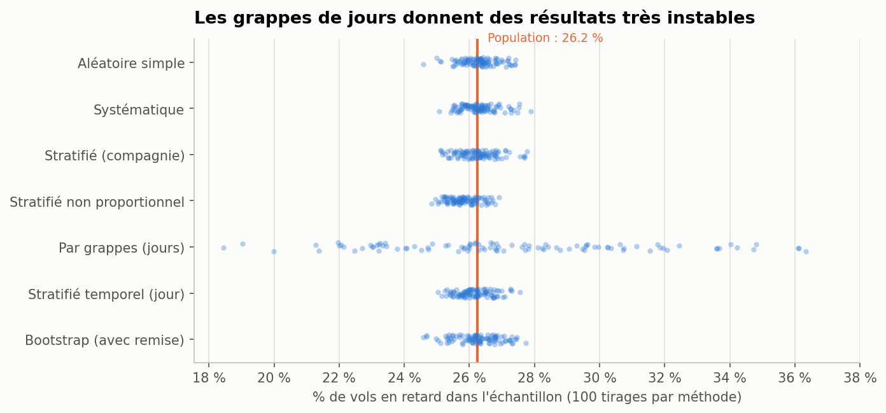
Les grappes sont instables car les retards dépendent fortement du jour (de 10 % à 63 %). Le stratifié non proportionnel est biaisé par construction (Delta passe de 66 % à 12,5 %) : sur 100 tirages il sous-estime le retard (25,8 %), mais repondéré il retrouve 26,1 % (population : 26,2 %). L'échantillon stratifié par jour est retenu : dans le groupe de tête, écart-type le plus faible, et les 61 jours représentés. Tous les pourcentages restent calculés sur les 54 461 vols.
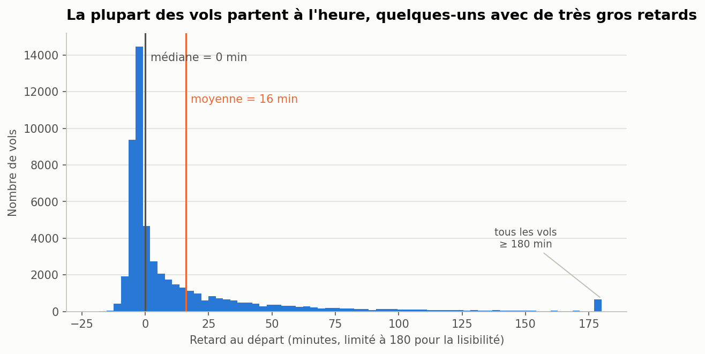
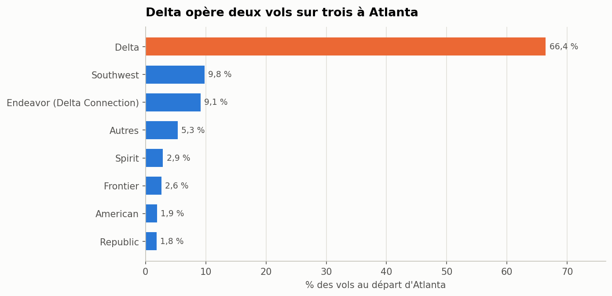
Le retard est fréquent (plus d'un vol sur quatre) mais très inégal : la médiane est de 0 minute alors que la moyenne atteint 16 minutes, tirée par une minorité de très gros retards. D'où le choix du % de vols en retard comme indicateur principal. La domination de Delta doit être gardée en tête : le taux global d'Atlanta est surtout le sien.
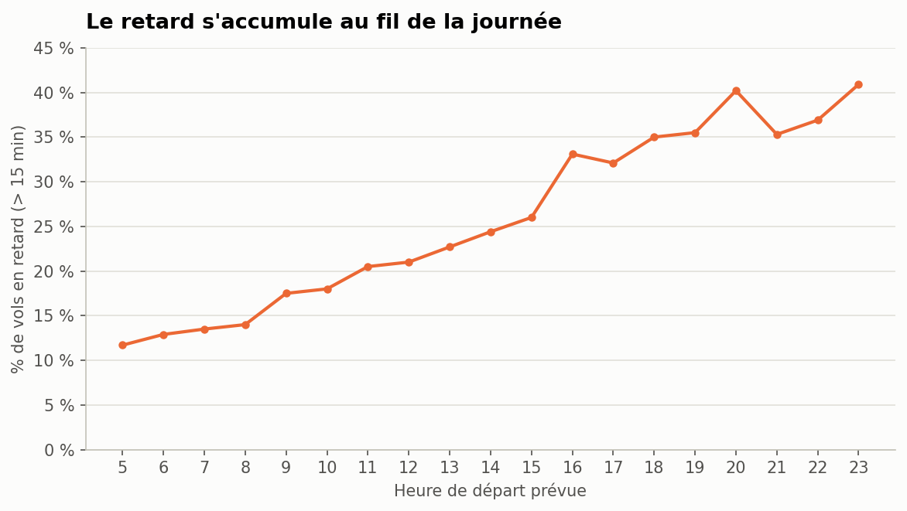
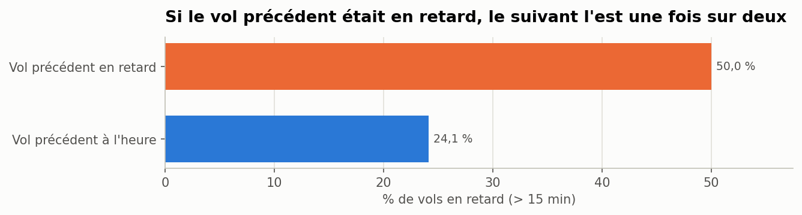
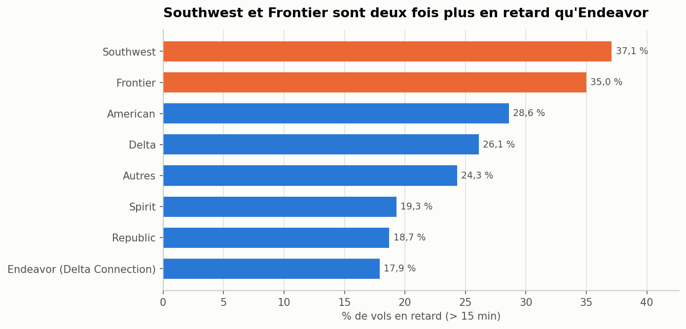
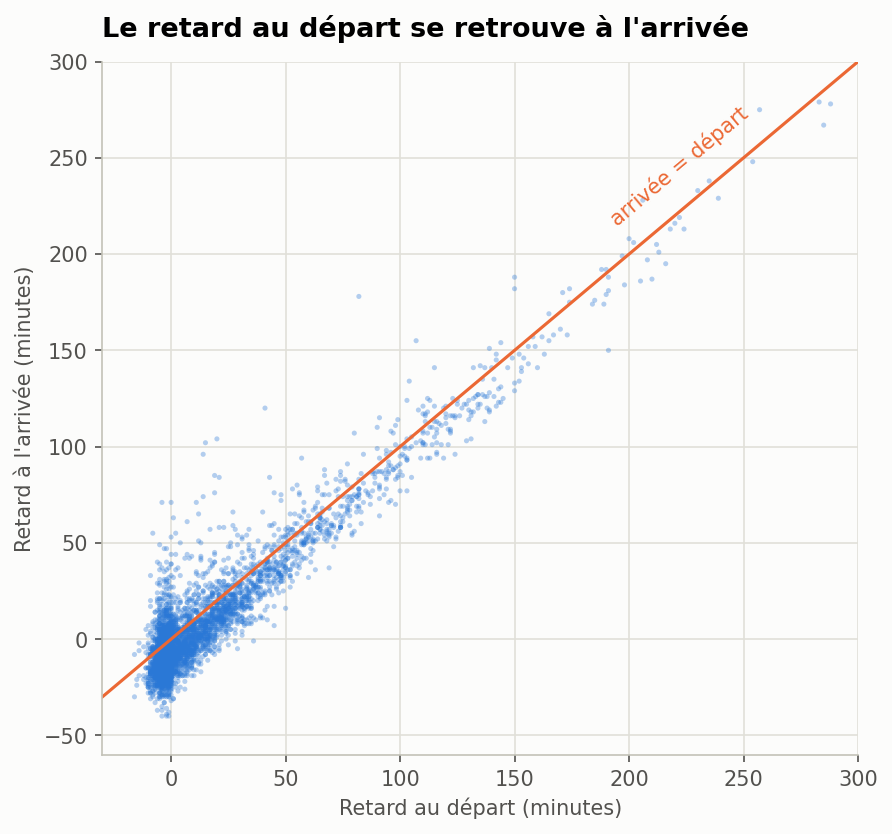
Le retard s'accumule au fil de la journée : un vol du soir a environ trois fois plus de risque d'être en retard qu'un vol du matin. La mesure directe de l'effet domino le confirme : quand le départ précédent d'un avion était en retard, son départ suivant l'est une fois sur deux. Le retard se joue au sol, avant le décollage : il se retrouve presque entièrement à l'arrivée (seuls 20 % des vols partis en retard arrivent à l'heure, avec ≈ 7 minutes regagnées en vol en médiane) et n'a aucun lien avec la distance (corrélation 0,01). Le jour de la semaine compte moins que l'heure (de 23 % le mardi à 29 % le jeudi). Ces relations sont des associations, pas des preuves de causalité.
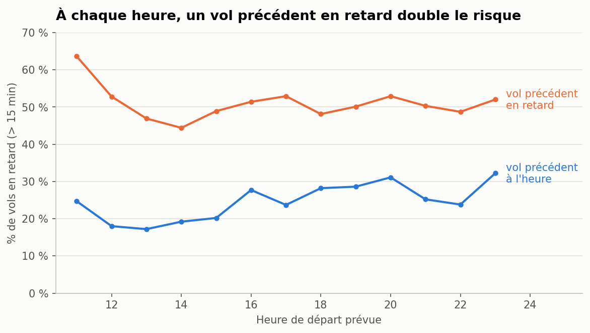
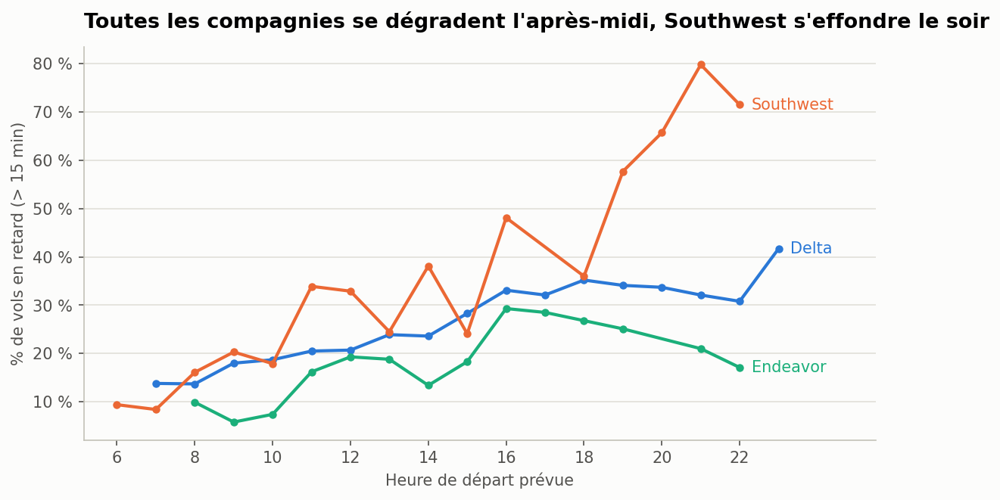
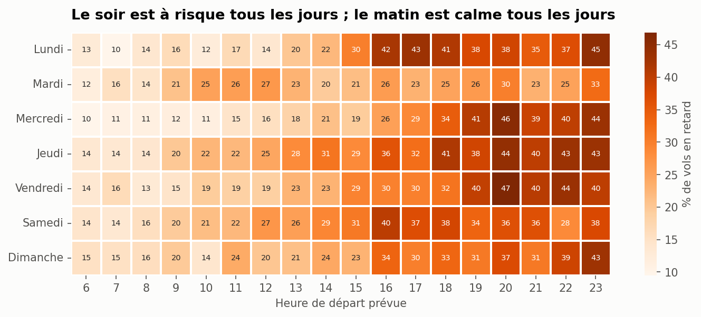
En croisant trois variables, l'effet domino résiste à l'heure de départ : à heure égale, un vol dont le précédent était en retard a environ deux fois plus de risque de repartir en retard. L'effet domino n'est donc pas qu'un effet « fin de journée ». La comparaison par compagnie montre que le mauvais score de Southwest vient surtout de ses vols du soir. Enfin, les destinations les plus touchées sont Orlando (38 %), New York JFK (37 %), Tampa (35 %) : la Floride revient plusieurs fois (hypothèse : orages d'été, non vérifiable sans données météo).
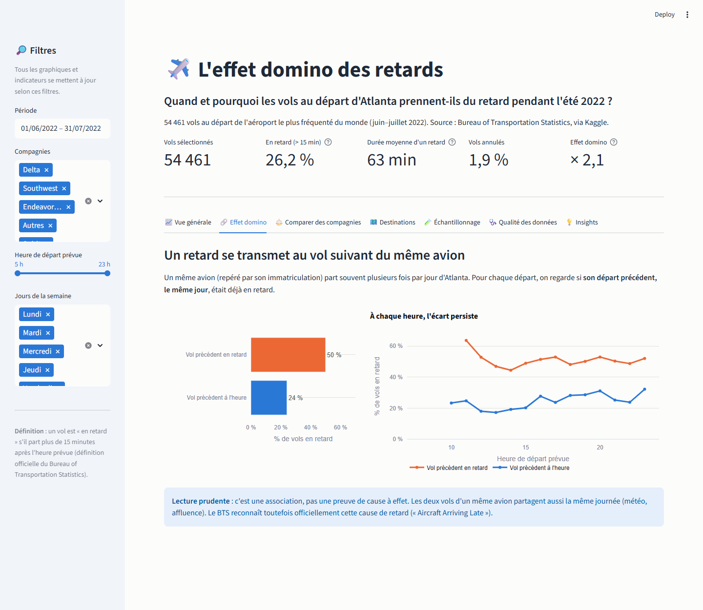
Le dashboard (Streamlit + Plotly) est pensé comme un outil d'analyse compréhensible sans explication préalable :
Identité visuelle commune au notebook, aux slides et au dashboard : bleu pour les vols en général, orange pour le retard et ce qui est mis en avant ; palette vérifiée pour les personnes daltoniennes ; titres qui énoncent la conclusion du graphique.
À Atlanta pendant l'été 2022, les vols prennent surtout du retard en fin de journée, parce que les retards se transmettent d'un vol à l'autre du même avion. Ce mécanisme touche toutes les compagnies, mais certaines y sont nettement plus exposées, et quelques jours exceptionnels aggravent fortement la situation. Le levier le plus efficace serait donc de protéger les premières rotations de la journée (marges au sol, avions de réserve). Avec plus de données, on ajouterait la météo horaire, les causes officielles de retard et une année complète pour comparer les saisons. Le même raisonnement s'applique directement à la ponctualité d'un réseau de bus.
Code, notebook, dashboard et 43 tests automatiques (pytest) : github.com/SalmaBouhmid/flight-delay-domino-effect.
Données : BTS via Kaggle « Flight Status Prediction » (robikscube).